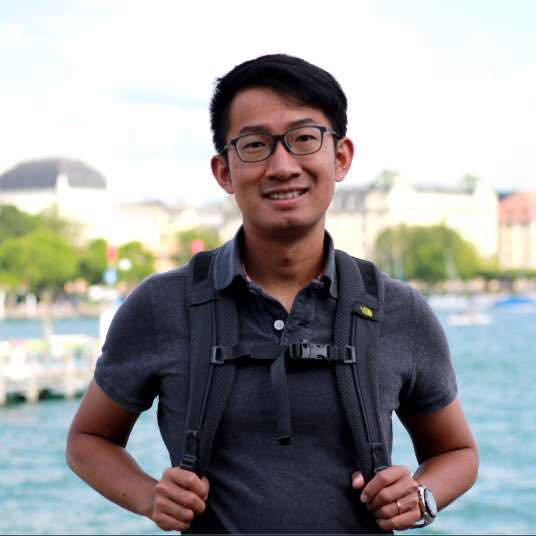
Hi! I'm a Research Scientist at Meta Reality Labs, building real-time multimodal models for human–AI collaboration and human–computer interaction on AI glasses and AR/VR.
I led Microgesture — the gesture recognition system on Quest headsets, featured at the Meta Connect keynote. I'm passionate about building intelligent agents that perceive human intent through multimodal signals, making collaboration with AI as natural as conversation.
Before joining Meta, I completed my PhD at ETH Zurich (2019), advised by Prof. Luc Van Gool and Prof. Angela Yao, where I studied 3D hand pose estimation and skeleton-based action recognition, earning the CVPR 2019 Best Paper Finalist award.
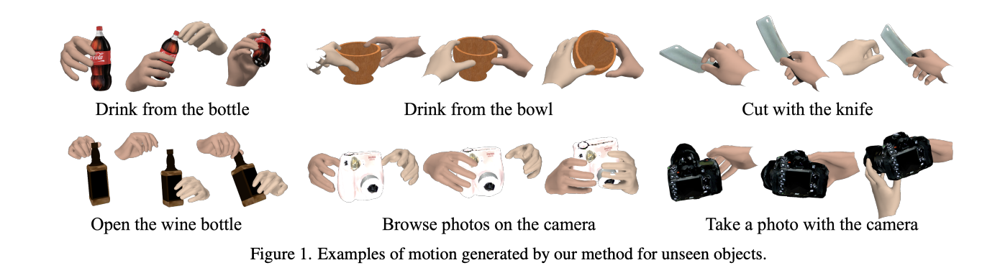
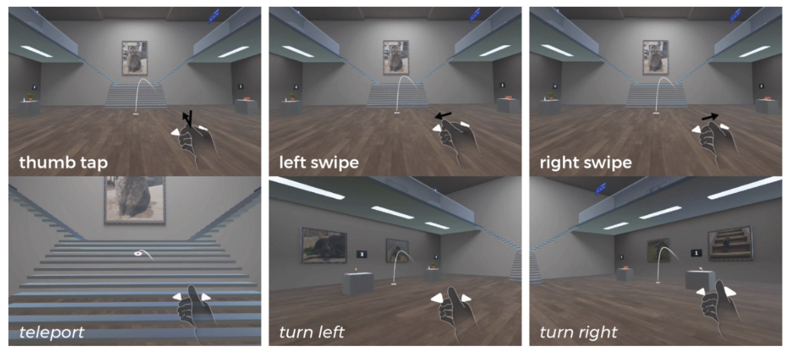
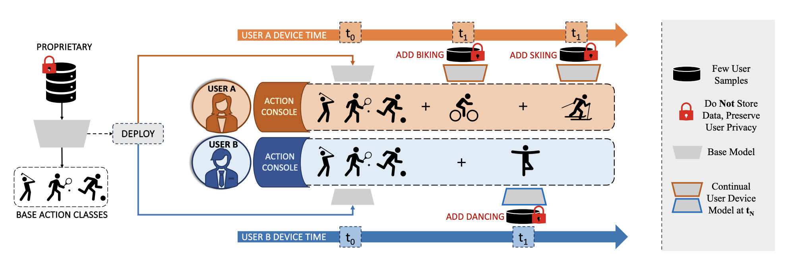
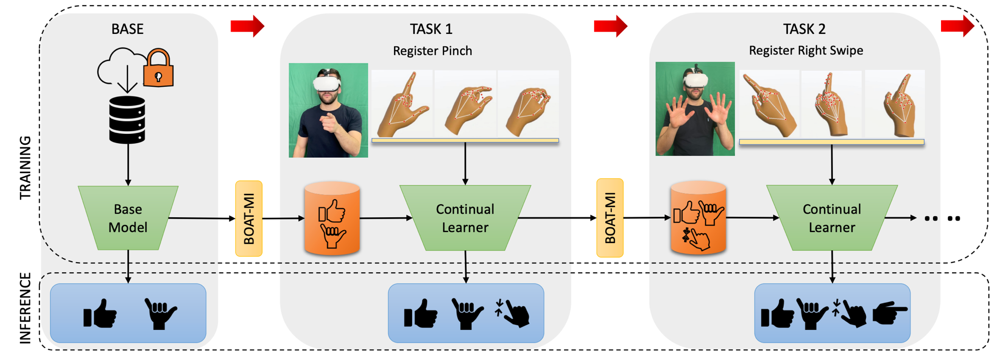
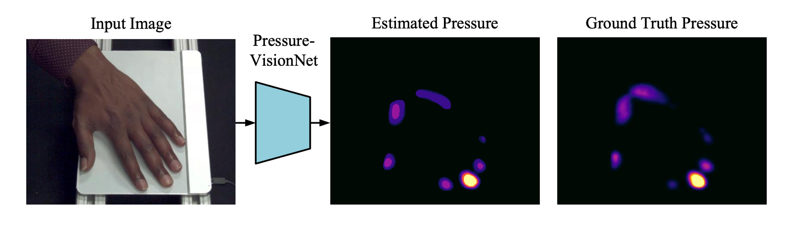
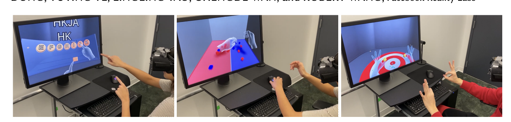
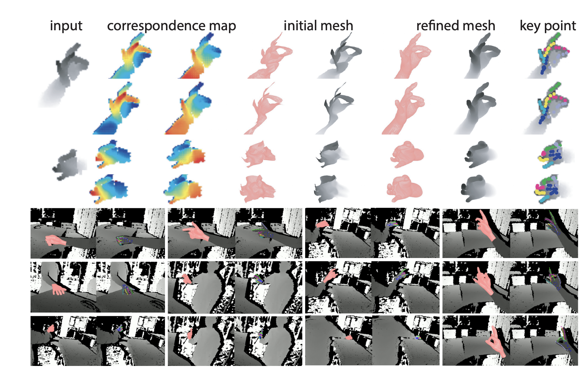
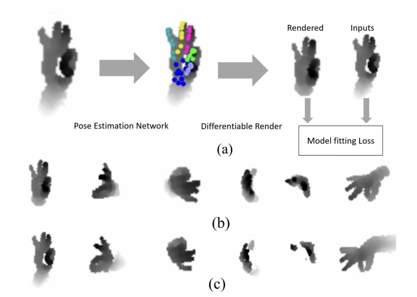
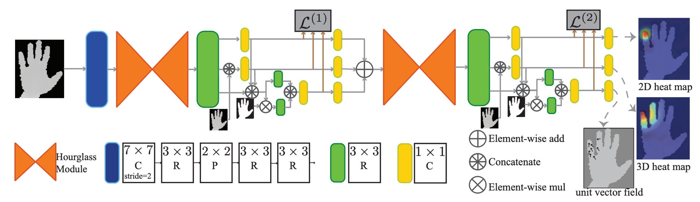
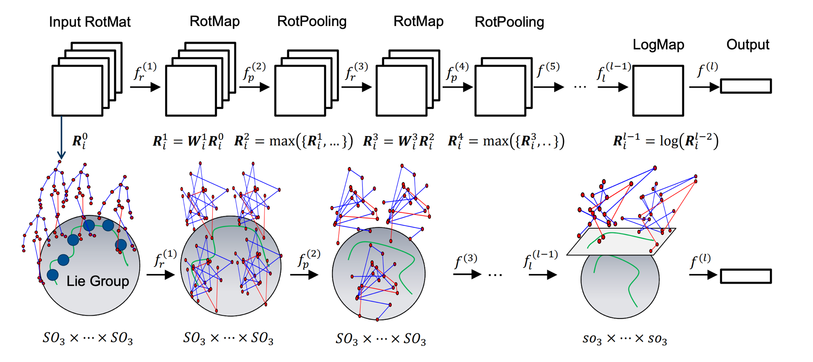
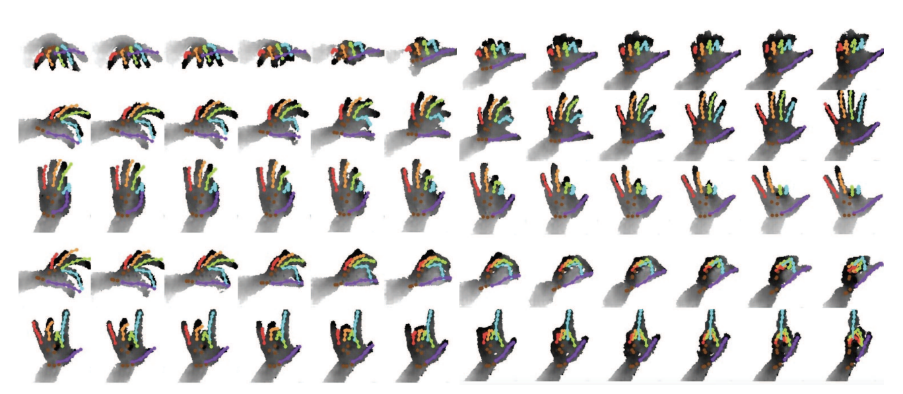